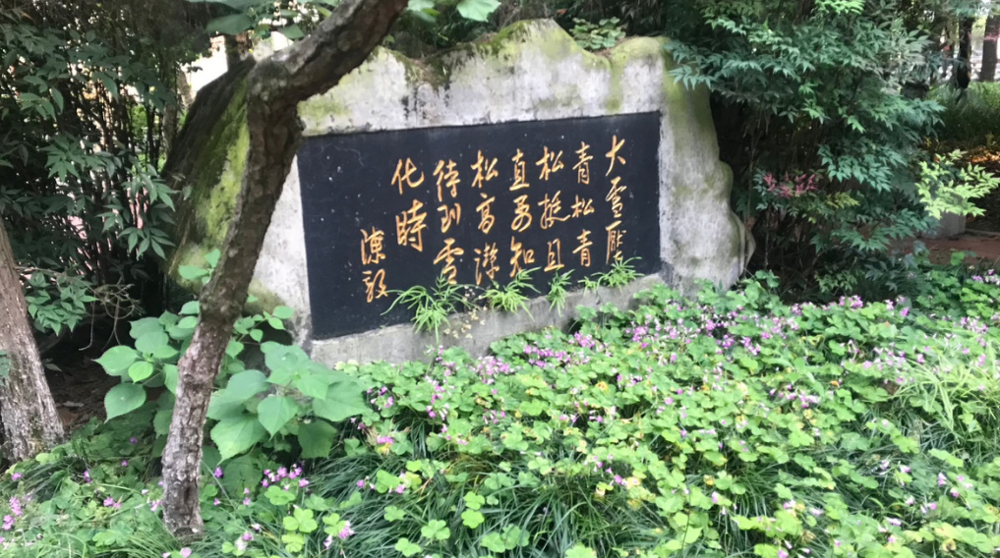
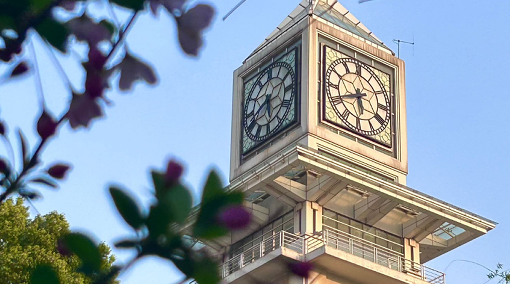

中南财经政法大学（Zhongnan University of Economics and Law），简称中南大，位于武汉市，是中华人民共和国教育部直属的一所以经济学、法学、管理学为主干，兼有哲学、文学、历史学、理学、工学、艺术学等九大学科门类的全日制普通高等本科院校，由教育部、财政部和湖北省人民政府三方共建，是国家“211工程”、“985工程优势学科创新平台”项目重点建设高校，国家“双一流”建设高校，入选国家“2011计划”、“111计划”、教育部人文社会科学重点研究基地、国家建设高水平大学公派研究生项目、卓越法律人才教育培养计划、国家级大学生创新创业训练计划、新工科研究与实践项目、中国政府奖学金来华留学生接收院校、全国毕业生就业典型经验高校、全国高校实践育人创新创业基地、湖北省2011计划，财经一流学科建设联盟理事长单位，立格联盟、中国—俄罗斯经济类大学联盟、“长江—伏尔加河”高校联盟成员，AMBA、CFA协会认证院校。
学校源于1948年以邓小平为第一书记的中共中央中原局创建、并由陈毅担任筹委会主任的中原大学。2000年，原隶属于财政部的中南财经大学和原隶属司法部的中南政法学院合并组建为中南财经政法大学。
截至2023年2月，学校有南湖、首义2个校区，占地2800余亩，建筑面积120万余平方米；图书馆有图文藏书1588万余册；设有20个学院（部、中心），本科专业60个；有教职工2500余人，其中专任教师1500余人；全日制本科生20000余人，硕士研究生8600余人，博士研究生1200余人。
截至2023年2月，学校现有教职工2500余人，其中专任教师1500余人，教师中教授370余人、副教授580余人、博士生导师240余人。现有国家级领军人才7人，国家级青年人才12人，中宣部文化名家暨“四个一批”人才工程入选者5人，享受国务院政府特殊津贴专家87人，“国家百千万人才工程”入选者9人，教育部教学指导委员会委员8人，全国模范教师、全国优秀教师、全国优秀教育工作者、全国高校名师、全国教育系统优秀工作者、全国教育系统巾帼建功标兵等12人，全国高校黄大年式教师团队1个，全国杰出青年法学家1人，荆楚社科名家4人，湖北名师和名师工作室主持人13人，湖北省有突出贡献中青年专家、省政府专项津贴专家58人。
|  |  |